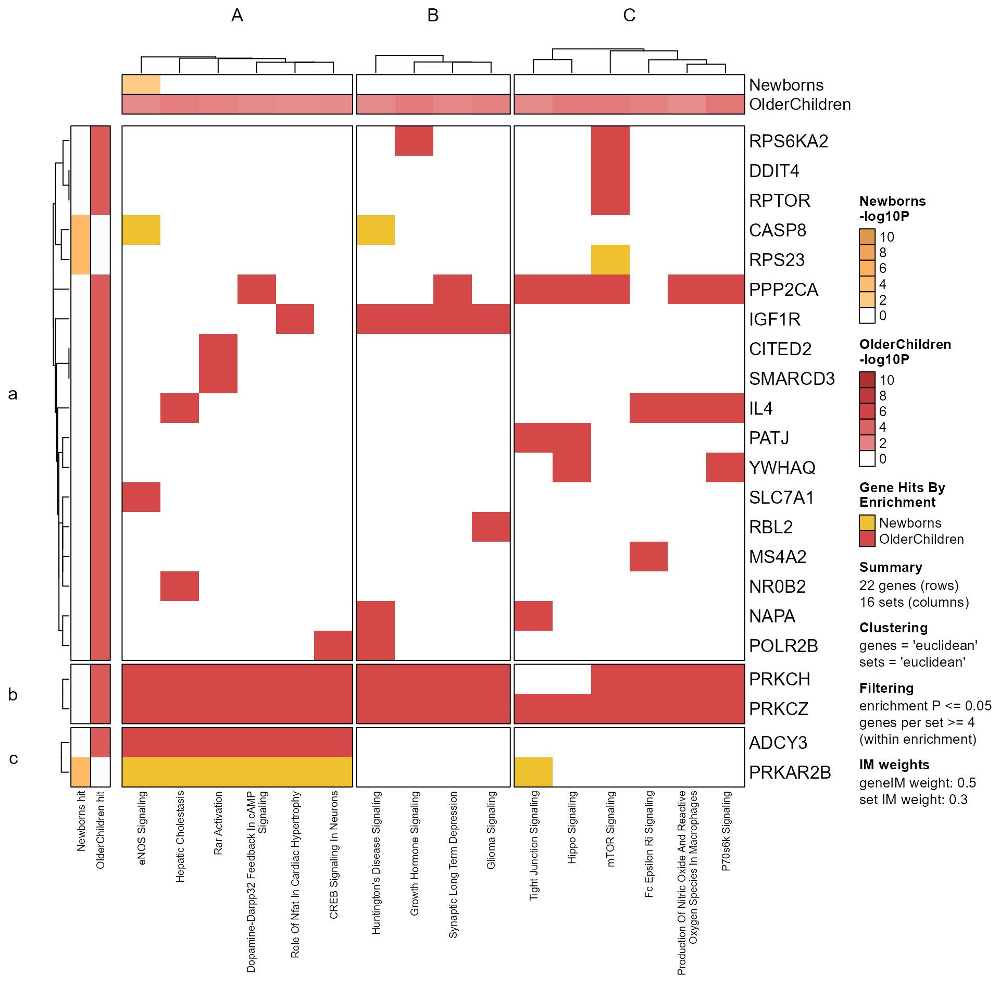
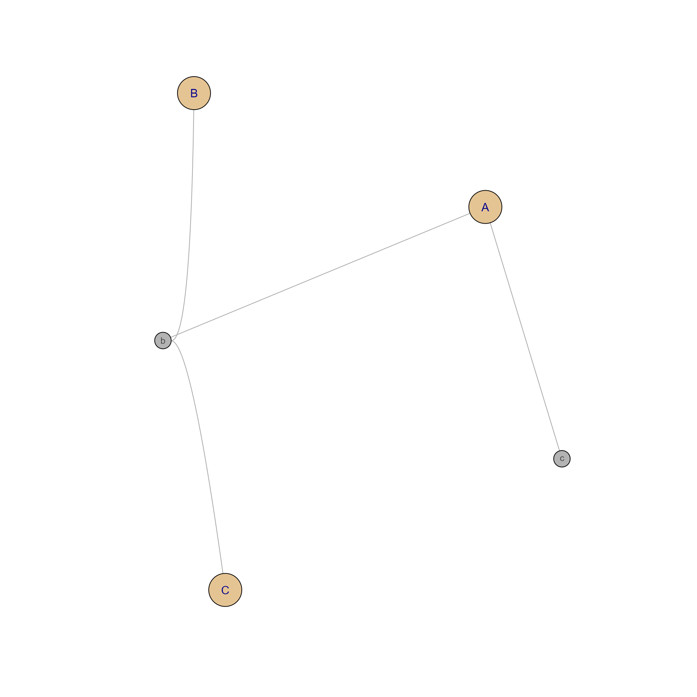

Score Gene-Path Clusters in MemPlotFolio
Source:R/jamenrich-score-gene-path-clusters.R
score_gene_path_clusters.RdScore Gene-Path Clusters in MemPlotFolio, still in development
Arguments
- Mpf
MemPlotFoliowithClusters()andGeneClusters()used to define pathway (set) clusters, and gene clusters, respectively. The data are taken from theGenePathHeatmap()heatmap data, which are equivalent to using thememIM(Mem)gene-pathway incidence matrix data.- set_fraction
numericvalue, default 0.5, indicating the fraction of pathways in a pathway cluster at or above which a gene is required to be present for that gene to contribute to the gene-pathway cluster score.- ...
additional arguments are ignored.
Value
matrix of numeric values ranging from 0 to 1, reflecting
the fraction of genes with at least set_fraction representation
in each pathway cluster. The columns are pathway clusters, and
rows are gene clusters.
Details
This function provides a quick summary of the "cohesiveness" of gene-pathway clustering, using a basic metric to summarize the fraction of genes represented in each pathway cluster.
The summary may be useful to identify "hot spots" in a gene-pathway heatmap, which may itself be useful to identify functional hubs which may be broadly shared across numerous pathways.
The simple metric appears effective at identifying gene clusters which are populated by the majority of genes, and therefore could be the basis for understanding the nature of common genes associated with multiple pathways. It also appears interesting to observe pathway clusters, some of which have one or more gene clusters with high gene-path cluster scores, and some which have moderate gene-path cluster scores across numerous gene clusters. The latter case may be an artifact of small pathway clusters, in which case a better metric should be evaluated.
See also
Other MemPlotFolio:
MemPlotFolio-class,
check_MemPlotFolio()
Examples
Mpf <- prepare_folio(fixSetLabels(Memtest), do_plot=FALSE, do_which=2, column_cex=0.5)
GenePathHeatmap(Mpf)

gpscores <- score_gene_path_clusters(Mpf)
# gpscores could even be used to create a network
gpnet <- mem2cnet((gpscores > 0.2) * 1)
jam_igraph(gpnet)
